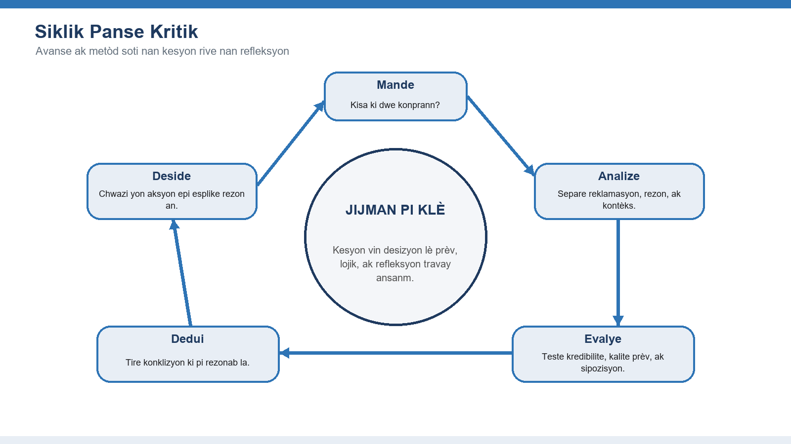
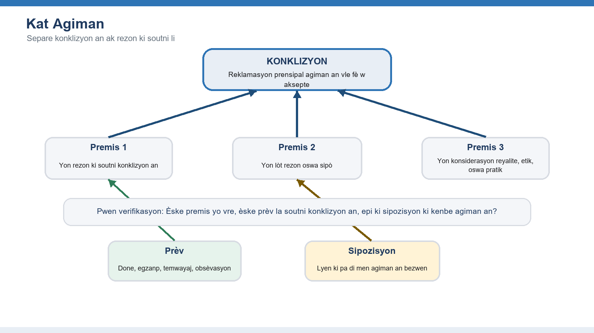
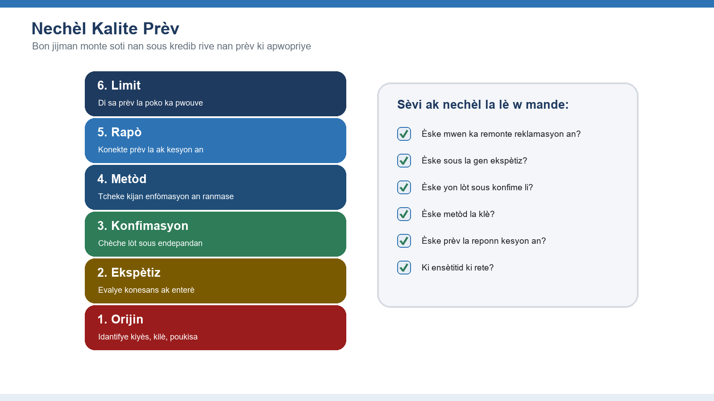
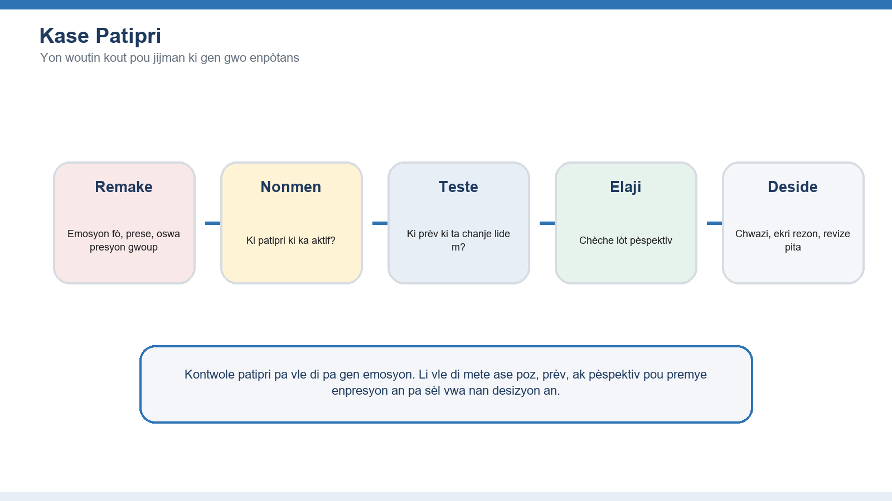
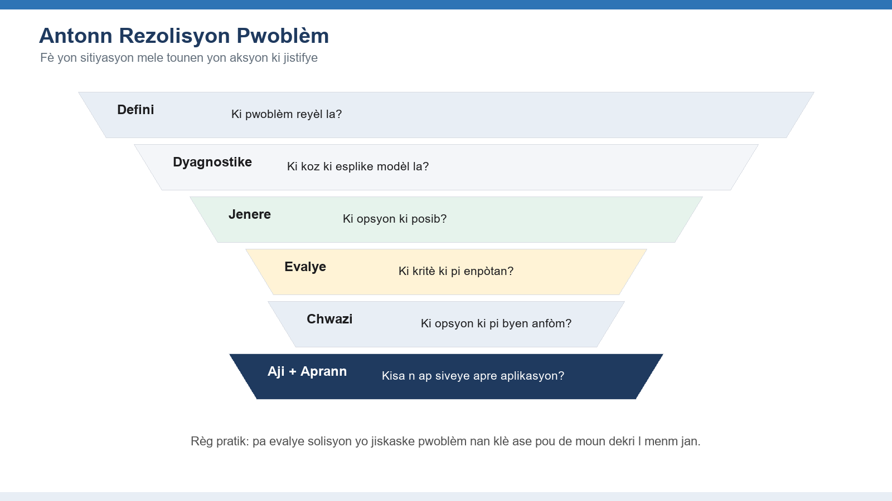
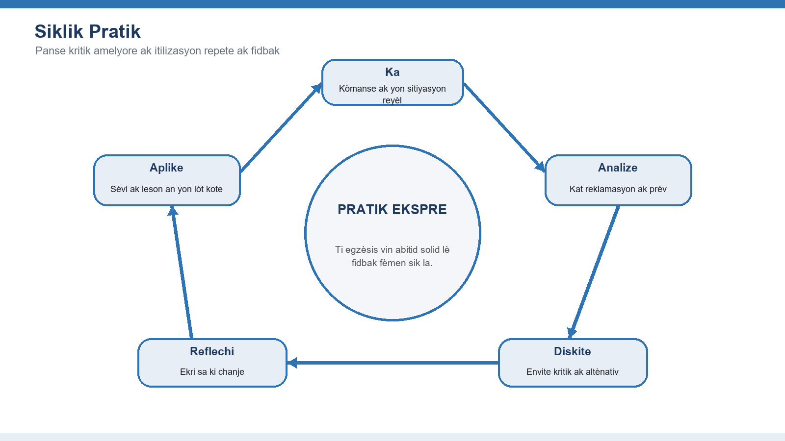

🧠 Panse kritik
Analize, evalye, epi deside ak konfyans
Dokiman konpayon sa a devlope plan orijinal ladrès panse kritik la pou l tounen yon gid aprantisaj pratik ak tèks eksplikatif, egzanp, dyagram, egzèsis, ak kesyon refleksyon.
Kòmanse ak mantalite panse kritik la, apre sa aprann analize agisman, evalye prèv, kontwole patipri, rezoud pwoblèm, epi pratike ladrès la plizyè fwa jiskaske li vin yon abitid.
1. Fondasyon Panse Kritik
Bati mantalite ak vokabilè elèv yo bezwen anvan yo evalye enfòmasyon konplèks.

Pwen Kle pou metrize
Definisyon ak enpòtans
Panse kritik se yon jijman disipline. Li mete ansanm kiryozite, prensip klè, prèv, lojik, ak imilite entelektyèl pou yon moun ka deside kisa pou l kwè oswa kisa pou l fè. Valè li pratik: li ede moun evite jijman prese, esplike rezon yo, epi pran pi bon desizyon lè enfòmasyon yo pa konplè oswa yo konteste.
Move konpreyansyon komen
Panse kritik pa menm bagay ak negativite, diskisyon pou diskisyon, oswa mefyans san limit anvè tout sous. Yon bon panse ka rete vijilan san li pa vin sinik, ouvè san li pa kwè tout bagay, epi desizif san li pa pretann gen plis sèten pase sa prèv yo pèmèt.
Benefis nan lavi pèsonèl ak pwofesyonèl
Nan lavi chak jou, panse kritik soutni pi bon chwa finansye, relasyon ki pi an sante, ak yon lekti pi pridan sou medya. Nan travay, li amelyore planifikasyon, analiz risk, dyagnostik pwoblèm, kolaborasyon, ak kominikasyon paske desizyon yo ka remonte jiska rezon ki soutni yo.
Mantalite panse kritik la
Mantalite a gen ladan kiryozite, pasyans, jistis, kouraj, ak volonte pou korije yon opinyon. Elèv yo pratike kesyon sa yo: Kisa mwen konnen? Kijan mwen konnen li? Kisa mwen sipoze? Kisa yon moun ki pa dakò avè m ta remake?
Erè komen pou veye
- Pran konfyans pou prèv
- Kouri sou solisyon anvan kesyon an klè
- Konfonn kritik ak evalyasyon serye
Travay pratik
- Ekri yon kwayans ou kenbe fò epi bay prèv ki soutni li.
- Idantifye yon sipozisyon dèyè kwayans sa a ak yon prèv ki ta ka defye li.
- Esplike diferans ant rete vijilan ak rejte tout bagay.
💬 Diskisyon — Modil 1
Yon kesyon, yon egzanp ou viv, yon dezakò sou modil sa a ? Pataje l isit la, ak respè.
Règ kominote a : nou atake lide yo, jamè moun yo. Site sous ou.
2. Idantifye ak Analize Agiman
Aprann elèv yo wè estrikti ki kache anba langaj ki vle konvenk.

Pwen Kle pou metrize
Premis ak konklizyon
Yon agiman gen yon konklizyon, sa vle di reklamasyon li vle fè w aksepte, epi li gen premis, ki se rezon yo bay pou soutni reklamasyon sa a. Elèv yo dwe rekonèt mo siyal tankou paske, kidonk, poutèt sa, men yo dwe rekonèt agiman tou lè mo siyal pa parèt.
Erè lojik
Erè lojik se modèl rezònman fèb. Egzanp yo gen atak sou moun, agiman fo imaj, fo chwa ant de opsyon, jeneralizasyon prese, glisad pant danjere, ak apèl bay otorite ki pa enpòtan. Bay non erè a itil sèlman lè elèv la ka esplike kijan rezònman an febli.
Evalyasyon agiman
Yon bon evalyasyon poze twa kesyon: Èske premis yo akseptab? Èske yo soutni konklizyon an? Èske gen sipozisyon oswa kont-egzanp ki manke? Sa separe fòs emosyonèl yon mesaj ak kalite rezònman li.
Rezònman dediktif ak endiktif
Rezònman dediktif chèche sèten lè premis yo vre epi fòm lan valab. Rezònman endiktif chèche pwobabilite, modèl, oswa pi bon eksplikasyon. Pifò desizyon reyèl sèvi ak rezònman endiktif, kidonk elèv yo dwe jije fòs agiman an, pa sèlman si li parèt kòrèk.
Erè komen pou veye
- Reponn ak ton mesaj la olye de estrikti li
- Rejete yon konklizyon paske yon ti premis fèb
- Sipoze tout deklarasyon ki konvenkan se agiman
Travay pratik
- Chwazi yon kout atik opinyon epi souliye konklizyon prensipal la.
- Ekri chak premis ak pwòp mo pa w epi trase flèch soti nan rezon yo rive nan konklizyon an.
- Idantifye yon objeksyon posib epi deside si agiman an toujou kenbe.
💬 Diskisyon — Modil 2
Yon kesyon, yon egzanp ou viv, yon dezakò sou modil sa a ? Pataje l isit la, ak respè.
Règ kominote a : nou atake lide yo, jamè moun yo. Site sous ou.
3. Evalye Prèv ak Sous
Ede elèv yo deside ki nivo konfyans yon reklamasyon merite.

Pwen Kle pou metrize
Evalyasyon sous
Yo dwe evalye yon sous selon otorite, presizyon, objektif, aktyalite, ak transparans. Elèv yo dwe mande kiyès ki kreye enfòmasyon an, ki ekspètiz li genyen, ki enterè ki prezan, si reklamasyon an ka verifye, epi si sous la separe reyalite ak entèpretasyon.
Rekonesans patipri
Tout sous gen pèspektiv, priyorite, ak limit. Patipri pa fè yon sous vin initil otomatikman, men li enfliyanse pwa nou bay enfòmasyon an. Kle a se idantifye direksyon, nivo, ak enpòtans patipri a.
Kalite prèv
Bon prèv dwe enpòtan, ase, presi, reprezantan, epi soti nan yon metòd ki fyab. Yon egzanp vivan ka fè yon lide pi klè, men li pa dwe sèvi kòm prèv yon modèl jeneral san plis sipò.
Sous prensipal ak sous segondè
Sous prensipal bay prèv dirèk, tankou done orijinal, entèvyou, dosye, oswa obsèvasyon. Sous segondè entèprete oswa rezime materyèl prensipal. Bon elèv sèvi ak toude, men yo konnen kilè yo dwe tcheke entèpretasyon an kont prèv orijinal la.
Erè komen pou veye
- Fè plis konfyans nan prezantasyon bèl pase nan metòd klè
- Sèvi ak enfòmasyon fin vye granmoun pou yon sijè k ap chanje vit
- Trete yon sèl egzanp tankou yon modèl
Travay pratik
- Konpare de sous ki fè menm reklamasyon an epi note kote yo dakò oswa diferan.
- Remonte yon estatistik jiska sous orijinal li.
- Bay prèv la nòt fò, mwayen, fèb, oswa ensifizan epi esplike rezon an.
💬 Diskisyon — Modil 3
Yon kesyon, yon egzanp ou viv, yon dezakò sou modil sa a ? Pataje l isit la, ak respè.
Règ kominote a : nou atake lide yo, jamè moun yo. Site sous ou.
4. Rekonèt ak Simonte Patipri
Bay elèv yo zouti pratik pou diminye erè jijman ki repete.

Pwen Kle pou metrize
Patipri mantal
Patipri mantal se chemen kout nan lespri a ki ka itil nan sitiyasyon senp, men ki ka twonpe nou lè gen gwo enje, konpleksite, oswa ensètitid. Yo enfliyanse sa nou remake, sonje, kwè, ak inyore.
Patipri konfimasyon
Patipri konfimasyon se tandans pou chèche, entèprete, epi sonje enfòmasyon ki soutni sa nou deja kwè. Li pisan paske li ka sanble ak bon rechèch pandan li ap filtre prèv ki ta ka kontredi nou.
Estrateji pou diminye patipri
Patipri diminye gras ak abitid, pa sèlman ak volonte. Bon estrateji yo gen ladan ralanti, bay patipri posib la non, chèche prèv ki kontredi, sèvi ak lis verifikasyon, konpare ak pousantaj debaz, envite dezakò, epi ekri rezon desizyon an anvan rezilta yo parèt.
Pran pèspektiv lòt moun
Pran pèspektiv vle di gade sitiyasyon an atravè objektif, kontrent, ak enfòmasyon lòt moun genyen. Sa pa mande pou n dakò; li amelyore presizyon ak jistis analiz la.
Erè komen pou veye
- Sipoze patipri afekte sèlman lòt moun
- Sèvi ak yon sèl sous opozisyon epi di rechèch la fini
- Konfonn malèz ak move prèv
Travay pratik
- Dekri yon desizyon resan epi idantifye ki patipri ki te ka enfliyanse li.
- Jwenn yon sous kredib ki defye premye opinyon ou.
- Defann pozisyon opoze a pandan twa minit anvan ou retounen sou pwòp opinyon ou.
💬 Diskisyon — Modil 4
Yon kesyon, yon egzanp ou viv, yon dezakò sou modil sa a ? Pataje l isit la, ak respè.
Règ kominote a : nou atake lide yo, jamè moun yo. Site sous ou.
5. Rezoud Pwoblèm ak Panse Kritik
Aplike analiz, prèv, ak rezònman sou pwoblèm reyèl ki konplike.

Pwen Kle pou metrize
Definisyon pwoblèm
Yon deklarasyon pwoblèm dwe nonmen diferans ant eta aktyèl la ak eta nou vle a, idantifye kiyès ki afekte, epi dekri prèv ki montre pwoblèm nan egziste. Yon deklarasyon fèb sote dirèkteman sou yon solisyon li prefere.
Evalyasyon solisyon
Yo dwe konpare solisyon yo ak kritè klè tankou enpak, posiblite, pri, risk, jistis, kapasite pou retounen dèyè, ak tan. Elèv yo dwe evite chwazi premye opsyon ki mache a anvan yo egzamine pi bon altènativ.
Kad pou pran desizyon
Kad tankou matris desizyon, analiz pri-benefis, lis avantaj ak dezavantaj, zouti rasin koz, ak premòtem fè rezònman vin vizib. Objektif la pa fè desizyon mekanik; se montre konpwomi yo pou yo ka diskite.
Analiz rasin koz
Analiz rasin koz gade pi fon pase sentòm ki parèt yo. Teknik tankou Senk Poukisa yo, dyagram kòz-efè, ak kat pwosesis ede elèv yo fè diferans ant deklanchè a ak kondisyon ki pèmèt pwoblèm nan kontinye.
Erè komen pou veye
- Rezoud sentòm nan olye de koz la
- Chwazi kritè apre ou fin chwazi opsyon ou renmen an
- Inyore aplikasyon ak siveyans
Travay pratik
- Reekri yon pwoblèm vag kòm yon diferans presi ant eta aktyèl ak eta vle.
- Jenere omwen twa solisyon posib anvan ou evalye youn.
- Sèvi ak twa kritè pou konpare opsyon yo epi esplike konpwomi ki nan rekòmandasyon final la.
💬 Diskisyon — Modil 5
Yon kesyon, yon egzanp ou viv, yon dezakò sou modil sa a ? Pataje l isit la, ak respè.
Règ kominote a : nou atake lide yo, jamè moun yo. Site sous ou.
6. Pratike Panse Kritik
Fè konsèp yo tounen abitid solid atravè egzèsis, fidbak, ak refleksyon.

Pwen Kle pou metrize
Etid ka
Etid ka pèmèt elèv yo pratike ak anbiguite ki sanble ak lavi reyèl. Yon bon ka gen enfòmasyon ki pa konplè, valè ki an konfli, presyon tan, ak konsekans. Elèv yo dwe idantifye reyalite, ensètitid, moun ki konsène, sipozisyon, ak opsyon desizyon.
Egzèsis pratik
Egzèsis yo dwe ase kout pou repete epi ase espesifik pou bay fidbak. Egzanp yo gen kat agiman, klasman sous, rechèch erè lojik, jounal patipri, matris desizyon, ak revizyon apre aksyon.
Aplikasyon nan lavi reyèl
Panse kritik vin gen valè lè elèv yo sèvi avè l deyò klas la: evalye nouvèl, prepare yon pwopozisyon, rezoud yon pwoblèm travay, entèprete done, oswa pran yon desizyon pèsonèl ki gen konsekans alontèm.
Amelyorasyon kontinyèl
Kwasans ladrès mande refleksyon. Elèv yo dwe konpare previzyon ak rezilta, ekri leson yo aprann, mande kritik, epi bati lis verifikasyon pèsonèl pou desizyon ki repete.
Erè komen pou veye
- Pratike sèlman definisyon abstrè
- Evite fidbak paske kritik santi l pèsonèl
- Pa transfere ladrès la nan sitiyasyon reyèl
Travay pratik
- Kenbe yon jounal desizyon pandan yon semèn ak reklamasyon, prèv, sipozisyon, desizyon, ak rezilta.
- Fè yon kout revizyon ak yon lòt elèv ki defye rezònman ou, pa karaktè ou.
- Chwazi yon abitid panse kritik pou pratike chak jou pandan mwa k ap vini an.
💬 Diskisyon — Modil 6
Yon kesyon, yon egzanp ou viv, yon dezakò sou modil sa a ? Pataje l isit la, ak respè.
Règ kominote a : nou atake lide yo, jamè moun yo. Site sous ou.
Egzèsis Pratik Final
Egzèsis sa yo mete ansanm sis modil yo epi yo ka sèvi kòm devwa, aktivite atelye, oswa revizyon nan fen leson an.
Analiz agiman
Chwazi yon kout atik, diskou, reklam, oswa pwopozisyon travay. Idantifye konklizyon an, ekri premis yo, make sipozisyon yo, epi evalye si prèv yo jistifye konklizyon an.
Evalyasyon sous
Chwazi yon reklamasyon aktyèl epi konpare omwen twa sous. Klase chak sous selon otorite, transparans, kalite prèv, ak rapò li ak kesyon an.
Idantifikasyon patipri
Revize yon ansyen desizyon pèsonèl oswa desizyon ekip. Idantifye kote patipri konfimasyon, ankrayaj, disponiblite, oswa presyon gwoup te ka enfliyanse rezilta a.
Defi rezolisyon pwoblèm
Sèvi ak antonn rezolisyon pwoblèm nan pou defini yon pwoblèm reyèl, dyagnostike koz posib, jenere opsyon, konpare yo ak kritè klè, epi rekòmande yon aksyon.
Gril Evalyasyon Pèfòmans Elèv
Sèvi ak gril sa a pou bay fidbak sou pwosesis rezònman an, pa sèlman sou si elèv la dakò ak konklizyon enstriktè a.
Referans ak Resous
- Foundation for Critical Thinking - www.criticalthinking.org
- Bloom's Taxonomy of Critical Thinking Skills
- Paul, R., and Elder, L. (2008). The Miniature Guide to Critical Thinking Concepts and Tools.
- Facione, P. A. (2015). Critical Thinking: What It Is and Why It Counts.
- Brookfield, S. D., and Preskill, S. (2005). Discussion as a Way of Teaching.
- Nòt dwa otè: Gid tradui sa a prepare kòm dokiman konpayon pou leson panse kritik Lojik360 University a.